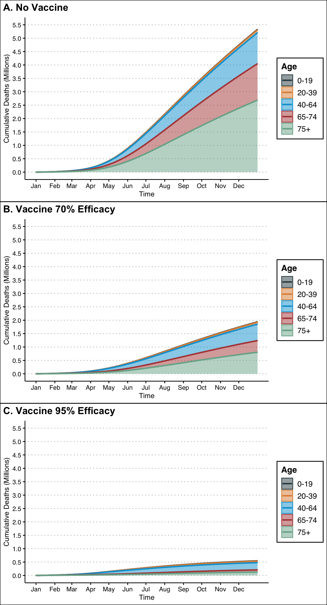
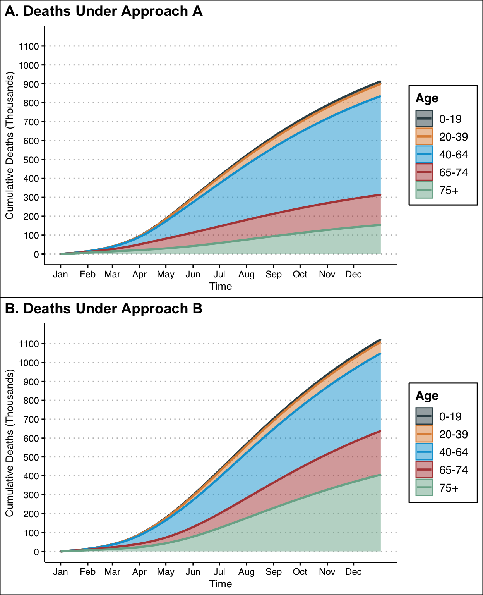
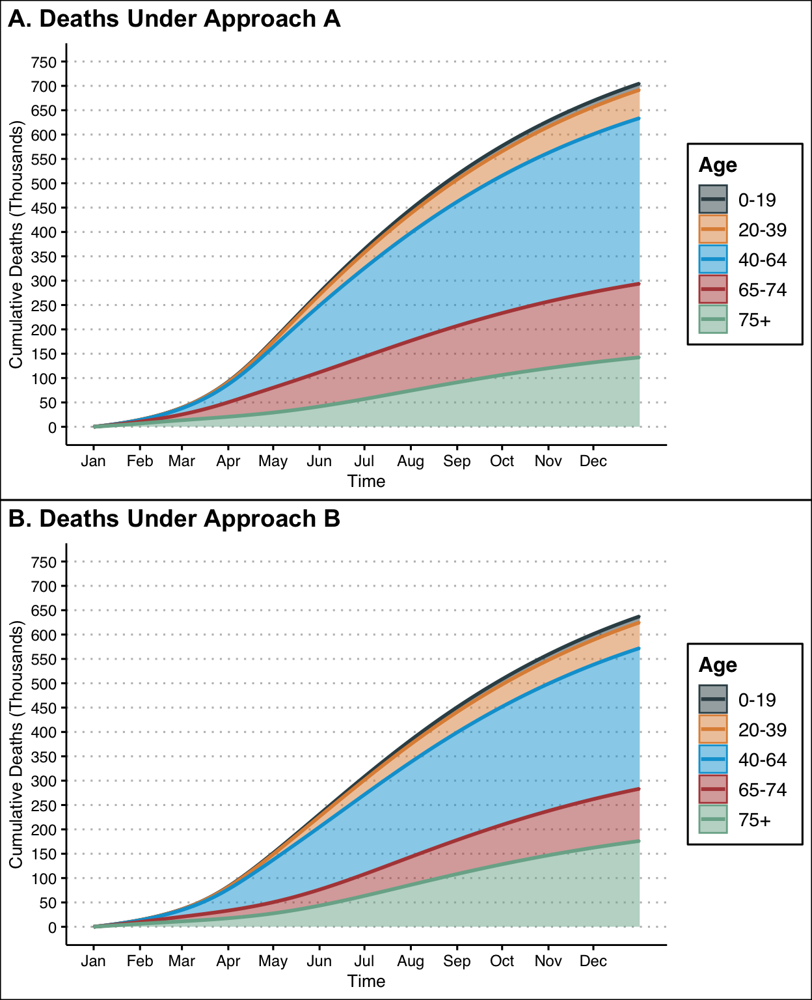

Over the past three weeks, the United States government has approved two different COVID-19 vaccines for emergency use. These two vaccines, one developed by Pfizer and the other by Moderna, are actually quite similar in that they are both two-dose mRNA vaccines with mild side-effects, and they have almost identical efficacy rates (95% and 94.1% respectively according to the FDA). The only notable difference is that the Moderna vaccine can be stored in a standard freezer while the Pfizer vaccine must be stored at -70 degrees Celsius, making it slightly less accessible for small healthcare centers.
Consequently, U.S. vaccine rollout plans have so far treated the two vaccines as essentially being the same, that is to say neither of the two vaccines is considered better than the other. This somewhat unexpected fact has simplified the already controversial rollout, but the impending introductions of new vaccines from companies like Johnson & Johnson and AstraZaneca threaten to introduce a new complexity. If a new vaccine with only 70% efficacy becomes available, how should it be incorporated into the rollout? Is it better to give at-risk patients a worse vaccine if it means they can get vaccinated a month earlier? Will people even want it?
The answers to these questions are certainly complex, and they will likely draw from principles in biology, mathematics, statistics, and economics among other fields. I cannot pretend to be an expert here - I am hopeful that the true experts have been thinking deeply about this issue - but I think the problem is quite fascinating. This post contains my thoughts and some basic modeling!
Before moving any further, let’s make sure we understand what vaccine efficacy is. Essentially, it is a measure of how well a vaccine prevents cases of the disease in a group of vaccinated subjects compared to a control group of un-vaccinated (received placebo) subjects. An estimate of the efficacy is generated from clinical trial data, which every vaccine must collect and submit to the FDA for review before being made available to the public.
The actual calculation of efficacy relies on a term called risk. In epidemiology, risk is the probability that an event (such as infection) will occur in a given time period, and it is measured in a clinical trial as the proportion of total subjects in a group who experienced the event in the time period that they were followed. For example, if 8 out of 1,000 patients who receive an actual vaccine in a clinical trial become infected with COVID-19, then the estimate of risk of infection in the vaccination group is simply 0.008, or 0.8%. The ratio of risk in the treatment (actual vaccine) group compared to the risk in the control (placebo) group is called the risk ratio. Risk ratios below 1 suggest that the treatment reduces the risk of disease compared to the control, and smaller ratios suggest a stronger reduction. Efficacy is calculated as 1 - Risk Ratio, so an efficacy closer to 1 (or 100%) means that the vaccine reduces the risk of infection by a greater proportion. You can read more about vaccine efficacy on the CDC website here.
Remember that ratios are multiplicative, not additive, so we can intepret 95% vaccine efficacy (the equivalent to 100%-95% = 5% risk ratio) as meaning that the risk for COVID in the vaccine group is 0.05 (5%) times the risk in the control group.
To assess the potential effects of different vaccine rollouts, we will create a model of the COVID-19 pandemic in the United States. Our first step will be to develop a simple framework using principles from epidemiology before adding more complex features. For this simple model, we divide the population of the United States into four groups: susceptible (S), infected (I), recovered and immune (R), and deceased (D). At a specific point in time, every individual should fall into one and only one of these categories.
With these categories established, our next job is to determine a way to describe the flow of individuals from group to group. See Diagram 1 below:
We are interested in how the flow of individuals occurs over time, so we will measure it as the rate at which people exit/enter a group per day. Below we explore each arrow on the diagram above:
\[\begin{align*} \beta = \frac{R_0 \gamma}{N} \end{align*}\]
I → D: The rate at which infected individuals die. This depends on our second parameter, \(\gamma\), and a third parameter, \(\mu\), the death rate. As the inverse of the infectious period, \(\gamma\) captures the average number of infected individuals that stop being infectious each day (i.e. if the infectious period is 5 days, then 1/5 of infectious individuals stop being infectious each day). As the death rate, \(\mu\) tells us what fraction of individuals leaving \(I\) are headed to \(D\) (what percent die), while the rest, or 1-\(\mu\), recover and head to \(R\). Thus, I → D is described by \(\gamma I\mu\).
I → R: The rate at which infected individuals recover. Using logic from I → D, above we have I → D is described by \(\gamma I(1-\mu)\). Note that the total rate at which individuals exit \(I\) is simply \(\gamma I\) because every infected individual either dies or recovers.
R → S: The rate at which recovered individuals lose immunity and become susceptible again. This value depends on a fourth paramter, \(\omega\), the inverse of the period of immunity. It is the same idea as \(\gamma\).
With these rates determined, we can now create a system of ordinary differential equations to describe the flow of people between groups. For each group, the change in size with respect to time (the derivative) is simply the sum of the rates with which people enter it (arrows entering the box) minus the rates with which people leave (arrows leaving the box). Thus, we have:
\[\begin{align*} \frac{dS}{dt} &= -\beta S I + \omega R \\ \frac{dI}{dt} &= \beta S I - \gamma I\\ \frac{dR}{dt} &= \gamma I(1-\mu) - \omega R\\ \frac{dD}{dt} &= \gamma I(\mu) \end{align*}\]
where the parameters \(\beta\), \(\gamma\), \(\omega\), and \(\mu\) are the transmission rate, recovery rate, loss of immunity rate, and death rate, respectively. If we set values for each of these parameters based on our knowledge of the COVID-19 pandemic and set initial sizes for each group, we can track the course of the disease by solving this system of ordinary differential equations for each day to model how the disease might progress.
Now that we have established the basic theoretical framework of the model, we can start to add complexities such as vaccines. Vaccinated individuals will come out of the susceptible group and enter a new group with different properties from the four we established before. See Diagram 2 below:
This model assumes that every vaccinated individual is protected completely from infection, but we know that this is not the case for COVID-19 vaccines in the real world. Accounting for this fact and supposing that individuals can receive one of two different vaccines, we have a new model detailed in Diagram 3.
Assuming that the number of vaccines given per day, \(\nu_1\) and \(\nu_2\), and the rates of success, \(\varphi_1\) and \(\varphi_2\), for each vaccine are known, we now have the following system of ordinary differential equations:
\[\begin{align*} \frac{dS}{dt} &= -\beta S I + \omega R - \nu_1 - \nu_2 \\ \frac{dV_{1}}{dt} &= \nu_1 - (1-\varphi_1) \beta V_1 I\\ \frac{dV_{2}}{dt} &= \nu_2 - (1-\varphi_2) \beta V_2 I \\ \frac{dI}{dt} &= \beta S I - \gamma I + (1-\varphi_1)\beta V_{1} I + (1-\varphi_2)\beta V_{2} I \\ &= \beta I[S + (1-\varphi_1)V_{1} + (1-\varphi_2)V_{2}] - \gamma I\\ \frac{dR}{dt} &= \gamma I(1-\mu) - \omega R\\ \frac{dD}{dt} &= \gamma I(\mu) \end{align*}\]
There are obviously a number of assumptions that this model is making for the sake of simplicity. The big ones are:
We should be okay with most of these assumptions for the sake of our simple model. Accounting for the ways in which behavioral changes, weather patterns, and government policies change the parameters would help the model better reflect the real life course of the virus, but we will leave that to the experts. With that said, there is one key factor that is currently being ignored - age.
It is well known that virus impacts different age groups in very different ways. In terms of our parameters, the death rate, \(\mu\), varies greatly across age groups. On top of that, the vaccine rollout plans (impacting \(\nu_1\) and \(\nu_2\)) will also certainly account for differences in age. In the following section, I discuss how we can incorporate age classes into our model.
Let’s now suppose that our population is made up of distinct age classes where \(N_i\) is the number of individuals in age group \(i\). For our purposes, we will use the age classes (with their corresponding N and death rates) detailed below:
i | Age | Population (in Millions) | Death Rate |
1 | 0-4 | 19.58 | 0.00026 |
2 | 5-9 | 20.19 | 0.00010 |
3 | 10-14 | 20.80 | 0.00010 |
4 | 15-19 | 21.06 | 0.00022 |
5 | 20-25 | 21.63 | 0.00040 |
6 | 26-30 | 23.50 | 0.00040 |
7 | 31-35 | 22.43 | 0.00135 |
8 | 36-40 | 21.73 | 0.00135 |
9 | 41-45 | 19.92 | 0.00346 |
10 | 46-50 | 20.40 | 0.00346 |
11 | 51-55 | 20.48 | 0.01267 |
12 | 56-60 | 21.87 | 0.01267 |
13 | 61-65 | 20.57 | 0.01267 |
14 | 66-70 | 17.46 | 0.04820 |
15 | 71-75 | 14.03 | 0.04820 |
16 | 76-80 | 9.65 | 0.11636 |
17 | 81-85 | 6.32 | 0.11636 |
18 | 85+ | 6.61 | 0.22083 |
Death Rate is calculated as overall deaths rate of population divided by overall incidence rate in population according to the CDC's ACIP report on 12/20/20. Population totals are for 2019 from Statistica.com. | |||
The seemingly simple, however incorrect, approach would be to run our previously specified vaccine model on each age group individually and calculate the overall size of each group as the sum of its size in each age group. For example, \(S = \sum_{i=1}^{18} S_i\). The problem with this approach is that it assumes that individuals only interact with, and therefore can only be infected by, people in the same age class. This is clearly not reflective of the real world.
To solve this issue, we need a contact matrix. A contact matrix describes the contacts between age group \(i\) and age group \(j\). As an example, let’s suppose that there are 900 students and 100 teachers in a school. Students make on average 40 contacts with other students and 10 contacts with teachers per day. Since the ratio of students to teachers is 9:1, students making 10 contacts with teachers on average means that teachers make on 10*9 = 90 contacts with students per day an average. Now also assume that the teachers only make contact with 5 other teachers per day on average. The contact matrix would be:
\[ \begin{bmatrix} 40 & 10 \\ 90 & 5 \\ \end{bmatrix} \]
These contact matrices have a few cool properties. You can read more about them here.
Because of the importance of the student-to-teacher ratio in the example above, contact matrices based on one demographic or social structure are are not generally compatible with other structures. Conveniently, a 2017 study by Kiesha Prem, Alex Cook, and Mark Jit estimated contact matrices for 152 countries, including the United States, using contact surveys and demographic data. We can download their contact matrix for the United States, multiply it by 0.2 to account for the reduced social mixing due to social distancing, and include it as a new parameter, C, in our model. You can view the code for the creation of C and the rest of this analysis at https://github.com/yangjasp/distill_site.
For our system of ordinary differential equations we now have:
\[\begin{align*} \frac{dS_i}{dt} &= -\beta S_i C (I_i/N) + \omega R_i - \nu_{1i} - \nu_{2i} \\ \frac{dV_{1i}}{dt} &= \nu_{1i} - (1-\varphi_1) \beta V_{1i} C (I_i/N)\\ \frac{dV_{2i}}{dt} &= \nu_{2i} - (1-\varphi_2) \beta V_{2i} C (I_i/N)\\ \frac{dI_i}{dt} &= \beta S_i I_i - \gamma I_i + (1-\varphi_1)\beta V_{1i} C (I_i/N) + (1-\varphi_2)\beta V_{2i} C (I_i/N) \\ \frac{dR_i}{dt} &= \gamma I_i(1-\mu_i) - \omega R_i\\ \frac{dD_i}{dt} &= \gamma I_i(\mu_i) \end{align*}\]
Note that this model assumes that the parameters \(\beta\), \(\gamma\), \(\omega\), \(\varphi_1\), and \(\varphi_2\) are constant across all age classes, while the death rate, \(\mu_i\), and the vaccination rates, \(\nu_{1i}\) and \(\nu_{2i}\), vary across classes.
Introducing a contact matrix allows our model to more accurately capture the rate of transmission across age classes, but it does not account for the fact that asymptomatic carriers are much more likely to come into contact with susceptible individuals than symptomatic ones. With this fact in mind, we introduce one more parameter, \(\alpha_i\), to represent the fraction of asymptomatic infections per age class. This addition should be an important one, as it will help our model better capture the reported role of young adults as viral spreaders. Similarly to the approach described in a 2012 paper by Tower and Feng, we can now split our infected (Is) classes into symptomatic (Is) and asymptomatic (Ia) class. We will also create a new contact matrix, Cs, which for our purposes will be a our old contact matrix, now called Ca, multiplied by some constant \(k\) < 1 which represents the fraction of contacts that a symptomatic individual makes compared to an asymptomatic individual on average. This gives us a revised final system of ordinary differential equations:
\[\begin{align*} \frac{dS_i}{dt} &= -\beta S_i [C^{a} (I^{a}_i/N_i) + C^{s} (I^{s}_i/N_i)] + \omega R_i - \nu_{1i} - \nu_{2i} \\ \frac{dV_{1i}}{dt} &= \nu_{1i} - \beta (1-\varphi_{1}) V_{1i} [C^{a} (I_i/N_i) + C^{s}(I^{s}_i/N_i)] \\ \frac{dV_{2i}}{dt} &= \nu_{2i} - \beta (1-\varphi_{2}) V_{2i} [C^{a} (I_i/N_i) + C^{s}(I^{s}_i/N_i)]\\ \frac{dI^{a}_i}{dt} &= \alpha_i\Big[\beta S_i [C^{a} (I^{a}_i/N_i) + C^{s} (I^{s}_i/N_i)] + \\ &\phantom{=} \beta (1-\varphi_{1}) V_{1i} [C^{a} (I_i/N_i) + C^{s}(I^{s}_i/N_i)] + \\ &\phantom{=} \beta (1-\varphi_{2}) V_{2i} [C^{a} (I_i/N_i) + C^{s}(I^{s}_i/N_i)]\Big] - \gamma I^{a}_i \\ \frac{dI^{s}_i}{dt} &= (1-\alpha_i)\Big[\beta S_i [C^{a} (I^{a}_i/N_i) + C^{s} (I^{s}_i/N_i)] + \\ &\phantom{=} \beta (1-\varphi_{1}) V_{1i} [C^{a} (I_i/N_i) + C^{s}(I^{s}_i/N_i)] + \\ &\phantom{=} \beta (1-\varphi_{2}) V_{2i} [C^{a} (I_i/N_i) + C^{s}(I^{s}_i/N_i)]\Big] - \gamma I^{s}_i \\ \frac{dR_i}{dt} &= (1-\mu_i)(\gamma I^{a}_i + \gamma I^{s}_i) - \omega R_i\\ \frac{dD_i}{dt} &= \mu_i(\gamma I^{a}_i + \gamma I^{s}_i) \end{align*}\]
Where \(C^{s} = k C^{a}\) in our case (it doesn’t have to in all cases, clearly, but we will use this for simplicity). This is our final model.
We can now use this model to answer our original question about the rollout of vaccines with different efficacies by adjusting the rates at which they are given in each age class, \(\nu_{1i}\) and \(\nu_{2i}\).
So how do we set \(\nu_{1i}\) and \(\nu_{2i}\)? According to a recent Bloomberg article, approximately 200,000 people per day are being vaccinated against COVID-19 on average. This number is pretty low, and some experts have said that this number needs to be much larger if the U.S. wants to reach its goals in 2021. Let’s say that the average number of vaccinations per day increases to 1 million in the new year. Since we defined \(\nu_{1i}\) and \(\nu_{2i}\) as the number of susceptible patients vaccinated per day, we can set a limit on the total vaccinations per day, \(1,000,000 = \sum_{i=1}^{18} \nu_{1i}+\nu_{2i}\). Here, we assume that the limiting factor in doses per day is the administration of them, not the availability of the vaccines themselves. Right now, this appears to be a more than reasonable assumption.
Note: for the models that follow, I will be using the following parameters:
| Parameter | Value |
|---|---|
| \(\beta\) | 0.05 |
| \(\gamma\) | 1/7 |
| \(\omega\) | 1/91 |
| \(\varphi_1\) | 0.95 |
| \(\varphi_2\) | 0.70 |
| \(k\) | 0.20 |
Let’s start by supposing that only one vaccine efficacy, 95%, is available. Remembering our discussion about vaccine efficacy, this means that compared to people who are not vaccinated, those who have been vaccinated have 0.05 times the risk of getting COVID. Assuming vaccinated individuals are making the same social contacts as they would if they were not vaccinated, this means that we have \(\sum_{i=1}^{18} \nu_{1i} = 1,000,000\) (\(\nu_{2i} = 0\) for all \(i\)), and \(\varphi_{1i} = 0.95\). That is, people who receive a vaccine receive vaccine 1 and are \(1-\varphi_{1i}=0.05\) times as likely to get COVID as those in the S group.
Below is a series of graphs comparing the the overall trajectory of deaths due to COVID-19 in the U.S. with no vaccine, Vaccine 2 (70% Efficacy) alone, and Vaccine 1 (95% Efficacy) alone. In these scenarios, both vaccines are administered starting with the oldest individuals and gradually moving down age classes.

The sizeable difference between the three cases is clear and demonstrates the impact that vaccines can have on the COVID-19 pandemic. Both vaccines cut the cumulative death total for 2021 in half and decreased the rate of deaths significantly. If we have an effective vaccine, the rate of COVID deaths starts to slow in late spring, even without a change in our distancing behavior.
Okay, the results of this scenario were probably pretty obvious. Now for the fun in scenario 2!
Now let’s suppose that there are two vaccines of different efficacies available. For the approximately 320 million people in the US, we have 150 doses ordered each for Vaccine 1 (95% efficacy) and Vaccine 2 (70% efficacy). In this scenario, we are still limited to 1 million doses per day, but the vaccines can each only be produced at a rate of 500,000 per day (note that if 1 million per day of the 95% could be produced, we would clearly use that on the most vulnerable individuals until we ran out before starting to produce the 70% and using that on whomever remained). We now have the dilemna that inspired this post!
Clearly we want to vaccinate the oldest and most vulnerable individuals first, but is it better to give them the Vaccine 2 if it means they get vaccinated faster? Let’s consider a couple of approaches:
Approach A : Every individual 65 or older will receive Vaccine 1. Vaccine 2 will only be given to people below 65, starting with the oldest (most vulnerable) and moving down age groups. Once the amount of susceptible individuals that are 65 or older drops below 500,000, the rest of the vaccine 1 doses can be allocated to whoever the oldest individuals left are.
Approach B: The oldest individuals will be vaccinated as soon as possible with either vaccine. Every day, the oldest 500,000 people will receive Vaccine 1 and the next oldest 500,000 will receive Vaccine 2.

Based on our model, approach A will save approximately 200,000 more lives overall than approach B. Almost 300,000 lives are predicted to be saved in the age 65+ category, although approach 1 results in more young deaths. This finding suggests that if our goal is to save the most lives, vulnerable individuals need to be vaccinated with an effective vaccine, even if that means it is done at a slower rate.
But is it really this simple? Remember that the figure above is based on a Vaccine 1 with 95% efficacy and a Vaccine 2 with 70% efficacy. But what if the difference in efficacies is smaller? The figure below compares the two approaches when Vaccine 2 has an 90% efficacy.

Under these conditions, approach B saves more lives overall. This finding is logical when we consider that approach B would clearly be optimal if both Vaccine 1 and Vaccine 2 had the same efficacy. Putting of vaccinations of vulnerable individuals is not worth it if the two vaccines have similar efficacies.
So at what Vaccine 2 efficacy does approach B overcome approach A as optimal? At this point of interest, the impact of a less effective vaccine is approximately equal to the impact of a slower rate of administration. According to our model, the two approaches result in an approximately equal number of deaths when Vaccine 2 has an 85% efficacy. Below 85%, more lives are saved with approach A, but approach B leads to more lives saved when Vaccine 2 has an efficacy above 85%.
While the specific numbers predicted by our model will almost certainly vary from the real-life course of COVID-19 in the U.S. in 2021, the most important takeaway from this post is the vital role that vaccine efficacy and rollout strategies will play in determining the pandemic’s course. If and when multiple vaccines become available, policy makers must keep the importance of vaccine efficacy differences in mind as they seek to develop vaccine allocation approaches that maximize lives saved. If a new vaccine has a significantly lower efficacy (< 85% according to our model) compared to the 95% efficacy of Pfizer and Moderna’s, it will be optimal to start administering it to low-risk individuals right away. If the efficacy is similar to 95% (> 85% according to our model), the best strategy is to use it to ensure that the oldest individuals get vaccinated as soon as possible.
The model framework set up in this post has the potential to become even more reflective of the real-life pandemic with some extra considerations. The true contact matrix and related transmission rate \(\beta\) are changing constantly as a result of developing societal perceptions of the virus, individual behaviors, and government policies. A time-dependent contact matrix and \(\beta_t\) would allow the model to reflect some of these dymanics. Another possible extension of the model could include more demographic classes that take into account other factors besides age such as job or location.
As a final point, this model is deterministic in that its projections are based on exact parameters without accounting for randomness. Despite this limitation, deterministic models are still used widely throughout epidemiology and have had some important applications. I am hoping to play around with a stochastic model that incorporates some of these other ideas in the future!
Also, let me know if there are any other scenarios I should explore. I am hoping to make a Shiny app that makes any scenario possible!
Age | Population (in Millions) | S | V1 | V2 | IA | IS | R | D |
0-4 | 19.58 | 19.09 | 0 | 0 | 0.05 | 0.05 | 0.39 | 0 |
5-9 | 20.19 | 19.69 | 0 | 0 | 0.05 | 0.05 | 0.40 | 0 |
10-14 | 20.80 | 20.28 | 0 | 0 | 0.05 | 0.05 | 0.42 | 0 |
15-19 | 21.06 | 20.53 | 0 | 0 | 0.05 | 0.05 | 0.42 | 0 |
20-25 | 21.63 | 21.09 | 0 | 0 | 0.05 | 0.05 | 0.43 | 0 |
26-30 | 23.50 | 22.91 | 0 | 0 | 0.06 | 0.06 | 0.47 | 0 |
31-35 | 22.43 | 21.87 | 0 | 0 | 0.06 | 0.06 | 0.45 | 0 |
36-40 | 21.73 | 21.19 | 0 | 0 | 0.05 | 0.05 | 0.43 | 0 |
41-45 | 19.92 | 19.42 | 0 | 0 | 0.05 | 0.05 | 0.40 | 0 |
46-50 | 20.40 | 19.89 | 0 | 0 | 0.05 | 0.05 | 0.41 | 0 |
51-55 | 20.48 | 19.97 | 0 | 0 | 0.05 | 0.05 | 0.41 | 0 |
56-60 | 21.87 | 21.32 | 0 | 0 | 0.05 | 0.05 | 0.44 | 0 |
61-65 | 20.57 | 20.06 | 0 | 0 | 0.05 | 0.05 | 0.41 | 0 |
66-70 | 17.46 | 17.02 | 0 | 0 | 0.04 | 0.04 | 0.35 | 0 |
71-75 | 14.03 | 13.68 | 0 | 0 | 0.04 | 0.04 | 0.28 | 0 |
76-80 | 9.65 | 9.41 | 0 | 0 | 0.02 | 0.02 | 0.19 | 0 |
81-85 | 6.32 | 6.16 | 0 | 0 | 0.02 | 0.02 | 0.13 | 0 |
85+ | 6.61 | 6.44 | 0 | 0 | 0.02 | 0.02 | 0.13 | 0 |
All numbers are in millions | ||||||||